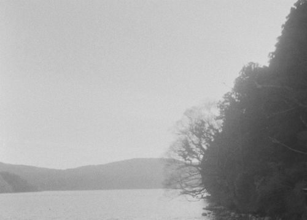

Ryotaro Ishihara
about
works
releases
schedule
texts

texts
論文 / papers
2024
写像論的作品解釈の構造と音楽への実践
(PDF)
作曲行為および制作における「素材」と「作品」の関係性を観察し、楽曲の構造上の性質を共時的な立場から考察する。ウィトゲンシュタイン『論理哲学論考』の「映像がもつ描写の形式」を参照し、「素材」「素材定項」「定義定項」からなる作品の見方を措定。ソシュールを参照しつつ「表徴度」「形式度」による座標的整理を提案し、「メディウム」「要素関数性作品」「窓さ」などの概念を導く。実例として銅金祐司・藤枝守、モーツァルト、ピエール・アンリ、および自作を分析する。
toro
2022–2025
001 — 書くことについて
（Dec 2022）
002 — 「無伴」ということ
（Dec 2022）
003 — 静寂の遠近——反静寂について
（Feb 2023）
004 — 音楽、アポロンさながらの
（Jul 2023）
005 — 《Susuki》について
（Feb 2025）
その他
2025
鼎談「すべての身体が記憶しているいまの私たち」
dialogue 2025.7.2@kinokoya(Tokyo) — Mansui × Ryotaro Ishihara × Takumi Tanaka